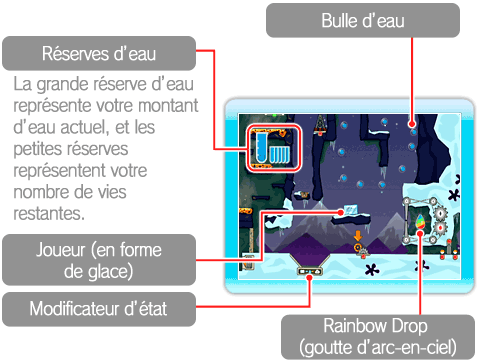
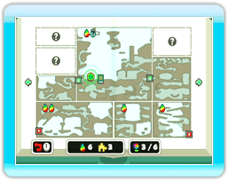
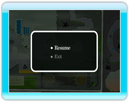

8 |
Écrans de jeu |
 |
|
● Écran de jeu 

● Écran de la carte En haut à gauche sur certaines vignettes, vous verrez des icônes ressemblant à des gouttes. Celles-ci indiquent qu'une goutte d’arc-en-ciel est cachée dans cette vignette. Si la goutte n’a pas de couleur, c’est que vous ne l’avez pas encore trouvée – alors assurez-vous de bien la chercher! Sur la carte, vous verrez aussi des , indiquant des portails. Vous pouvez voyager librement entre les portails que vous avez déjà découverts pour vous déplacer plus vite entre les pages de l’Aquaticus.

● Menu de pause
|
 lors d'une partie pour accéder à la carte du chapitre dans lequel vous vous trouvez. Appuyez vers la gauche ou vers la droite sur
lors d'une partie pour accéder à la carte du chapitre dans lequel vous vous trouvez. Appuyez vers la gauche ou vers la droite sur  pour changer de page.
pour changer de page.
 pour la mettre en pause. Les options suivantes s’affichent alors :
pour la mettre en pause. Les options suivantes s’affichent alors :  |
 |
 |